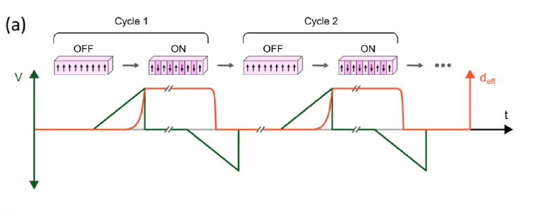
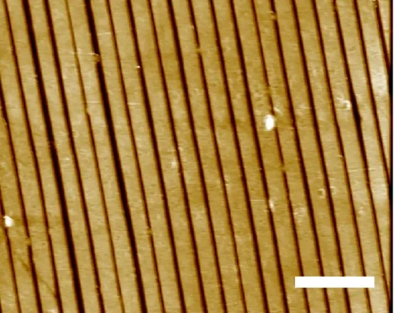
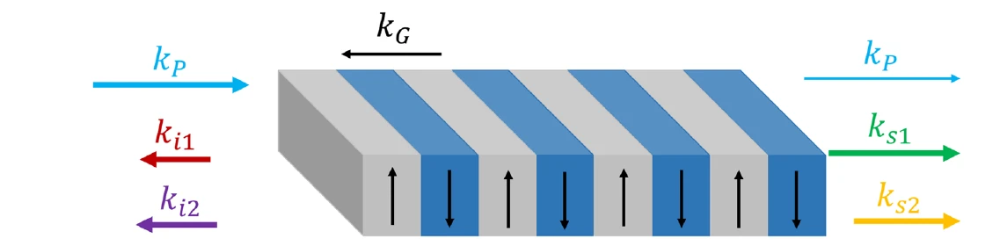
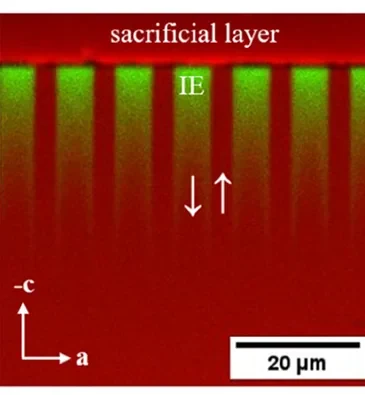

A crystal that can change its mind
We showed that a nonlinear grating inside a crystal can be switched on, erased and rewritten, and that it keeps its state without power.
Department of Applied Physics · KTH Royal Institute of Technology, · Stockholm
Nonlinear optical materials can change the colour of light, generate entangled photons, and control how light interacts with light.
These capabilities depend on how the material is engineered. Traditionally, much of that engineering is fixed during fabrication.
What if we could change it whenever we wanted?
At ONDA, we explore how to engineer nonlinear materials whose optical functions can be written, erased, and rewritten, allowing us to control and reconfigure the way light is transformed.
A simple example of a powerful idea
Now imagine being able to change that pattern, and with it what the material can do.
The idea
Swap atoms in and out of the lattice, and the crystal's optical and electrical behaviour changes with them.
Pattern the crystal's internal polarisation finer than a wavelength of light, and new interactions become possible.
Make the crystal thin and narrow enough to hold light tightly, and weak effects become strong.
Our vision
We envision a future where the way materials interact with light is no longer fixed at fabrication, but can be designed, programmed, and reconfigured.
Our research
The way light interacts with matter depends on much more than the material itself. By controlling composition, structure, geometry, and ferroelectric domains, we can access optical phenomena that conventional approaches cannot easily reach. At ONDA, we push these boundaries in three interconnected directions.
Engineering nonlinear materials
We investigate how composition, ion transport, and ferroelectric domains determine the properties of nonlinear materials, and how we can engineer them to create new optical functionalities.
Pushing the boundaries of nonlinear optics
We explore light–matter interactions in structures engineered at the micro- and nanoscale, enabling unconventional processes such as backward-wave frequency conversion and mirrorless optical oscillation.
Reconfigurable quantum photonics
We investigate how engineered nonlinear interactions can enable new ways of generating and manipulating quantum light, with the long-term goal of making optical and quantum functionalities programmable.
Research highlights
A few of the results our research builds on, each supported by one or more papers.

We showed that a nonlinear grating inside a crystal can be switched on, erased and rewritten, and that it keeps its state without power.

Ion exchange lets us write ferroelectric domain gratings with periods below 500 nm, which stay straight through a millimetre of crystal.

In sub-micrometre gratings, light can be generated travelling against the pump, giving an optical oscillator that needs no mirrors.
The first first-order backward photon-pair source, and the first frequency translation using it.

We map exactly where the exchanged rubidium ions sit inside KTP, and show how these engineered regions decide where, and how easily, the crystal can switch.
The question at the end
That is the question behind everything we do. Each project in the group is a step toward being able to ask it seriously.
How we work
At ONDA, we believe that great science is a collective effort. We bring together people with different backgrounds, skills, and perspectives, working closely together to explore challenging scientific questions.
At ONDA, we are more than a collection of individual researchers. We are a team. We share ideas, knowledge, and challenges, learn from one another, and celebrate achievements together. We strive to create an environment where everyone feels they belong, where contributions are valued, and where we support each other while encouraging everyone to take initiative, develop their own ideas, and grow as independent scientists.
Inclusiveness, gender equality, and mutual respect are fundamental to our research culture. We are committed to creating an environment where everyone feels welcome, is heard, and has equal opportunities to contribute and grow.
We value curiosity, creativity, open discussions, and the freedom to explore unexpected directions. We believe that the most interesting discoveries often happen at the boundaries between disciplines, and that learning from both successes and failures is an essential part of doing science.
Meet ONDA
ONDA brings together researchers and students with diverse backgrounds and expertise, united by a shared curiosity about light and matter.
From materials engineering and experimental physics to nonlinear and quantum optics, each of us brings a different perspective to the questions we explore together.
Our research is shaped by the people who make it happen.
Research vision & leadership
Professor, Department of Applied Physics, KTH
KTH profile →Research & scientific exploration
PhD student
Fabrication of reconfigurable squeezers
Industrial PhD student with NYFORS Teknologi
Direct fiber coupling to waveguides
Assistant Professor, KTH · SQuiCS group
Squeezed light generation
Professor, KTH · KTH profile
AI-enhanced nanofabrication
Join us
Master’s theses, internships and project courses at KTH AlbaNova. Each project is part of our ongoing research and can be adapted to your background and interests.
AI-assisted experimental automation and quantum photonics
Goal: Develop an automated, computer-controlled experimental setup for precise, reproducible and programmable modification of material composition in nonlinear optical crystals, paving the way towards new quantum light sources.
What if we could program the properties of a crystal to control the light it produces?
At ONDA, we engineer materials to create, manipulate and control light in new ways. Our research connects material design with quantum photonics, including sources of entangled photons and squeezed light.
A key part of this work is controlling the composition of potassium titanyl phosphate (KTP), a nonlinear optical crystal. By introducing selected ions into the crystal, we can modify how it guides light and how its ferroelectric domains can be engineered. Our ambition is to move towards programmable material engineering, where processing conditions are defined digitally, executed automatically and monitored in real time.
You will develop a computer-controlled experimental platform that helps us test a large matrix of material compositions to find those best suited for programmability. The system will combine electrical measurements, temperature control and real-time monitoring to enable precise and reproducible material processing. You will use AI-assisted development tools to design and implement instrument control, automated experimental sequences and live data visualisation. Working closely with ONDA researchers and PhD students, you will help demonstrate how programmable processing can be used to engineer material properties for future photonic devices.
The project is suitable for a master’s thesis, internship or project course in physics, engineering or related fields. No specific programming language is required. An interest in AI-assisted development, experimental technology and hands-on problem-solving is particularly welcome.
Goal: Develop a low-cost, automated nanoimprint system, guided by AI, for fabrication of quantum devices.
Periodic structures with sub-µm periods in nonlinear optical crystals are key to the next generation of quantum light sources. Examples are counter-propagating entangled photon pairs and mirrorless optical parametric oscillators. Making these structures today needs expensive lithography tools that are poorly suited to small crystals. Nanoimprint lithography copies a nanoscale pattern from a stamp in seconds, at a fraction of the cost. Commercial imprint tools, however, are expensive and not designed for small crystals that must be aligned precisely. We want to build our own imprint system: affordable, fully automated, and using machine vision and AI to align the stamp to the crystal and to optimise the imprint process.
This project combines hardware, software and nanofabrication. You will be part of a research team and participate in a larger research project. Your task will be to help build and automate an imprint station that presses a nanostructured stamp into a thin resist layer on the crystal and cures it with UV light. The station will control force and UV exposure precisely, and use a camera to align the grating to the crystal edge to within a few hundredths of a degree. You will:
The results will be used to develop the next generation of entangled photon sources for quantum technologies.
The project is suitable for an internship and/or project course as well as for a master’s degree. It can be adapted towards hardware and automation, software and AI, or nanofabrication, depending on your interests. Experience with Python, electronics or cleanroom work is a plus but not required.
Goal: Development of laser-assisted fabrication techniques for quantum devices in crystals.
Ridge nanowaveguides in nonlinear optical crystals are of utmost importance for quantum technologies, especially those requiring entangled photon pairs. Here, we want to develop a novel method that combines laser-assisted writing and etching to create such waveguides.
This project deals with modifying material properties by laser writing. You will be part of a research team and participate in a larger research project. Your task will be to characterize how the energy dose delivered by the laser influences material properties. The project includes characterization of the laser dose, programming a translation stage, and analysis of how the dose changes the crystallographic structure of the starting material. You will be working closely with a group of PhD students and researchers. The results of this project will be used to develop the next generation of entangled photon sources for quantum technologies.
The project is suitable for an internship and/or project course as well as for a master’s degree.
There are no open PhD positions at the moment. New positions are announced on KTH’s job page.
Bring your own fellowship idea and let’s develop it together.
Interested in a project, or in working with us? Send a short note about who you are and which part of our research caught your attention. A CV helps but is not required for a first conversation.
ONDA · Department of Applied Physics
KTH Royal Institute of Technology
AlbaNova University Center, Stockholm
ccg@kth.se